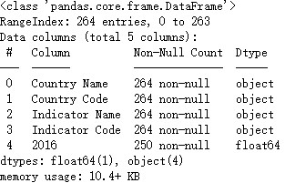
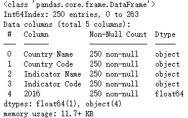
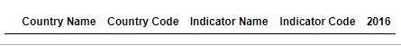
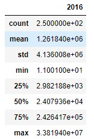

数据清洗¶
数据处理是指将收集到的数据进行加工、整理，形成适合数据分析的样式；可以将数据处理简单的分为数据的清洗、数据的整理；数据清洗主要包括以下三个过程：
- 处理缺失值
- 处理重复值
- 处理异常值
主要用到的是pandas库。
处理缺失值¶
查看数据的基本信息
import pandas as pd
data = pd.read_excel('path_to_file.xls或.xlsx',sheet_name='Sheet1') # 以读取的excel文件为例
data.info() # 其中主要包括：整体数据的总行数、各列数据类型统计、各列的列名、各列总共有多少非空数据、表格占用的系统空间等
df.head(数字),查看后几行使用df.tail(数字)
查找缺失值
在pandas里，可以使用isna()和notna()方法来查找DataFrame对象以及Series对象中的缺失值。df.isna()返回的是DATa Frame对象，Series.isna()返回的是Series对象。返回对象的内容是布尔值，缺失数据会用True来表示，False代表数据不缺失。
删除缺失值
可以使用dropna()方法直接删除 DataFrame 对象和 Series 对象中含有缺失值的数据；只要执行 df.dropna() 这一代码方法，就可以将 DataFrame 对象中包含缺失值的每一行全部删掉。
DataFrame.dropna(axis=0, how='any', thresh=None, subset=None, inplace=False)
# axis: 0/'index'：删除包含缺失值的行, 1/'columns'：删除包含缺失值的列 ;默认值为 0
# how: 'any': 如果存在任何NA值，则删除该行或列; 'all': 如果所有值均为NA，则删除该行或列;默认值是'any'
# thresh: int, optional Require that many non-NA values。要保留的非NA个数
# subset: 删除指定列的缺失数据['列名']
# inplace: 是否就地修改
Series.dropna(axis=0, inplace=False, how=None)
# axis: 只有一个值0或者'index'
# inplace: 是否就地修改
# how: str, optional,Not in use. Kept for compatibility.
填充缺失数据
DataFrame.fillna(value=None, method=None, axis=None, inplace=False, limit=None, downcast=None)
Series.fillna(value=None, method=None, axis=None, inplace=False, limit=None, downcast=None)
# value: scalar, dict, Series, or DataFrame
# method: {‘backfill’, ‘bfill’, ‘pad’, ‘ffill’, None}, default None
# axis: DataFrame-{0 or ‘index’, 1 or ‘columns’};Series-0 or ‘index’
# inplace: bool, default False
# limit: int, default None填充数量
# downcast: dict, default is None
处理重复值¶
查找重复值
可以使用df.duplicated()查看DataFrame对象的重复数据，返回一个Series对象，重复为True，不重复为False；使用Series.duplicated()查看Series的重复数据，返回一个Series对象，重复为True，不重复为False。
也可以通过df[df.duplicated()]查看重复行的数据。
DataFrame.duplicated(subset=None, keep='first')
# subset: 指定列，默认所有列
# keep: {‘first’, ‘last’, False}, default ‘first’,保留第一个还是最后一个
Series.duplicated(keep='first')
删除重复值
可以使用df.drop_duplicates()删除DataFrame 对象中重复出现的整行数据；使用Series.drop_duplicates()删除Series 对象中重复出现的整行数据。
DataFrame.drop_duplicates(subset=None, keep='first', inplace=False, ignore_index=False)
# ignore_index: bool, default False,If True, the resulting axis will be labeled 0, 1, …, n - 1
Series.drop_duplicates(keep='first', inplace=False)
处理异常值¶
检查、筛除异常值
使用df.describe()可以查看DataFrame对象的描述性统计信息，然后根据最大、最小值、平均数、中位数等信息，利用布尔索引的方式筛除异常值。比如有个记录蔬菜价格和销量的数据data，要筛除数据中价格小于0的数据，可以通过以下方式：
data = data[data['单价'] > 0]
案例¶
还是以2016年世界各国二氧化碳排放量（2016world-co2.xls）的数据为例。
数据的读取
import pandas as pd
# 读取2016年的数据
data = pd.read_excel(r'C:\Users\Administrator\Desktop\2016world-co2.xls',sheet_name='Data',header=3)
缺失值处理
数据的基本信息data.info()

可以看出共有264行数据，除列'2016'外，其他数据不存在缺失。
删除缺失值（现实中，要根据业务或其他要求来决定是删除，还是填充数据）data.dropna(inplace=True) 并查看。

重复数据处理
data.duplicated()发现并无重复数据。

异常数据处理
data.describe()现实中，要根据业务或其他要求来决定是否是异常值。
